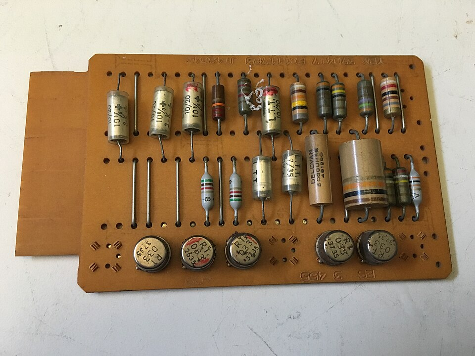
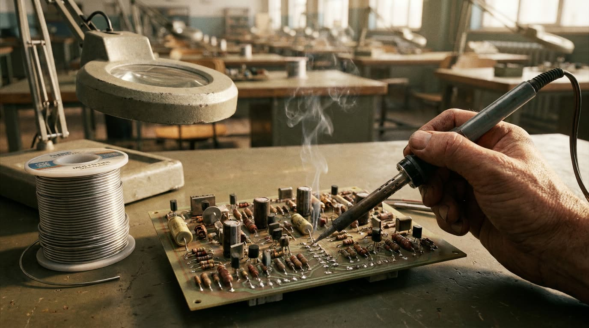
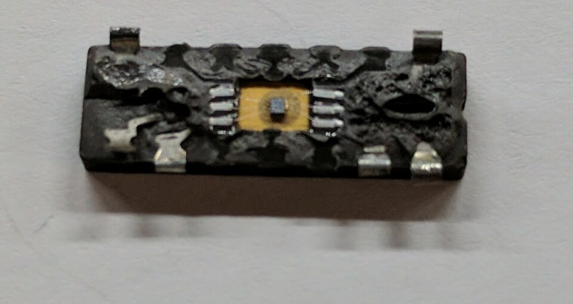
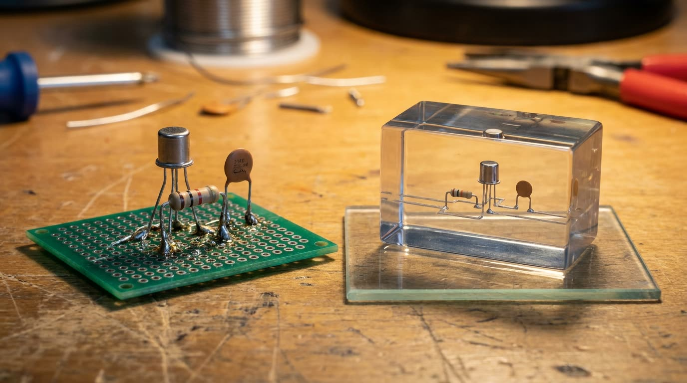
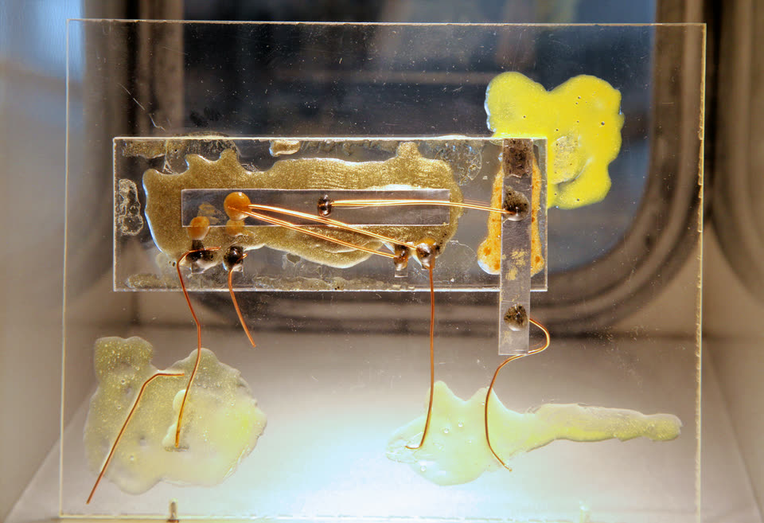
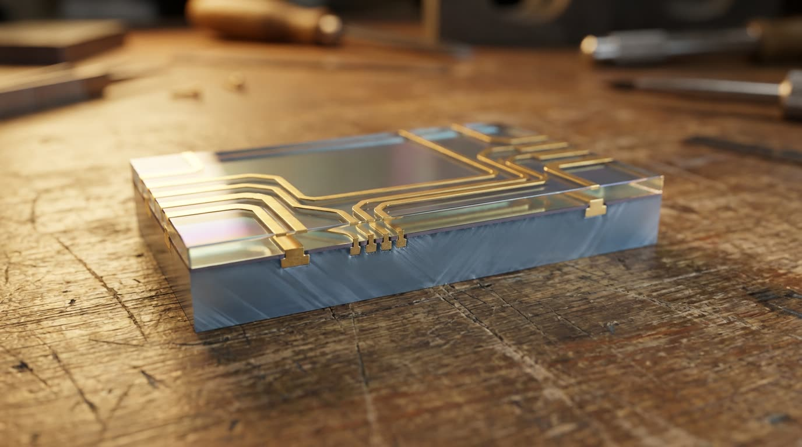
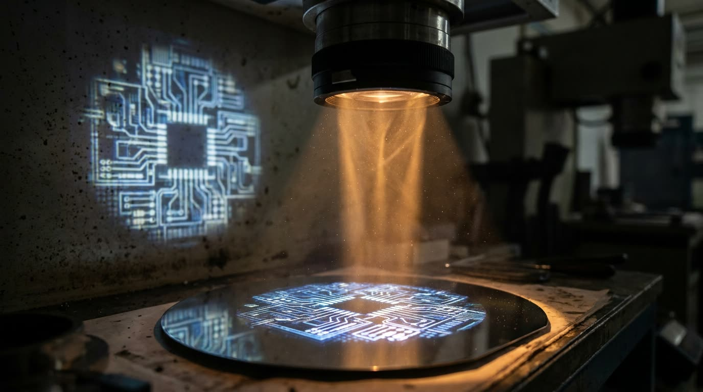
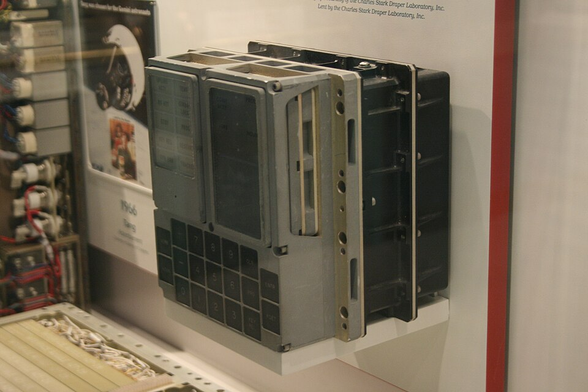
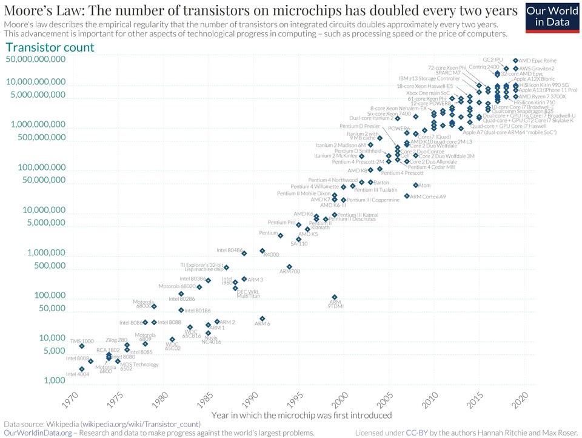

O circuito integrado
De 1958 a 1965. A peça encolheu, mas a montagem não: cada transistor chega solto, numa caixinha de três perninhas, e alguém solda perna por perna. Quando o áudio pedir, aperte Próximo.
O que trava agora. O limite deixou de ser a peça e virou a ligação entre as peças. A época chamou isso de tirania dos números: quanto melhor o projeto, mais impossível de montar.
Quarenta mil pontos de solda


Dez mil transistores não são dez mil soldas. Cada peça tem no mínimo três pernas, e os resistores e capacitores em volta têm mais. São trinta ou quarenta mil pontos numa máquina só, um pingo de metal derretido por vez.
E se fossem do mesmo pedaço?
Se a ligação já nasce lá dentro, o problema das quarenta mil soldas não é resolvido: ele deixa de existir.


Funcionou dentro de um pedaço só

Num laboratório da Texas Instruments, um circuito simples funcionou inteiro dentro de uma lasca de germânio. A teoria saiu do papel.
A casquinha de vidro e as trilhas impressas


Na Fairchild, dois passos juntos. Aquecendo o silício ele cria uma camada de óxido, que é vidro e não conduz. Nesse chão isolado as ligações são impressas: trilha fina de metal, descendo por janelinhas onde precisa encostar.
Um provou, o outro mostrou como fazer
O segundo só avançou rápido porque o primeiro mostrou que dava. A série não elege um inventor.
Fotolitografia


O cristal recebe um material sensível à luz. O desenho daquela camada é projetado por cima, como um slide numa parede. Um banho químico tira o que a luz marcou, e o que sobra manda no passo seguinte. Camada por camada, até o circuito inteiro estar lá dentro.
Menor fica melhor em tudo ao mesmo tempo
Três ganhos ao mesmo tempo, sem sacrifício no meio. A partir daqui não existe motivo pra parar de encolher, e é isso que explica todo o resto da história.
Míssil e foguete

Nos primeiros anos o chip era caro: pra quem fazia rádio civil, soldar à mão continuava saindo mais barato. Quem assinou o cheque foram os programas militares e espaciais, onde cada grama custa uma fortuna pra sair do chão e uma solda rachada na vibração não tem conserto no ar.
A curva

Alguém bem posicionado na indústria olha os poucos anos de chip que existiam e nota: o número de componentes que cabe numa pastilha vinha dobrando em intervalos regulares. Não é lei da natureza. É observação de mercado.
1965
E se, em vez de um chip pra cada trabalho, existisse um chip só, sempre o mesmo, capaz de fazer qualquer trabalho dependendo da ordem que a gente der pra ele?